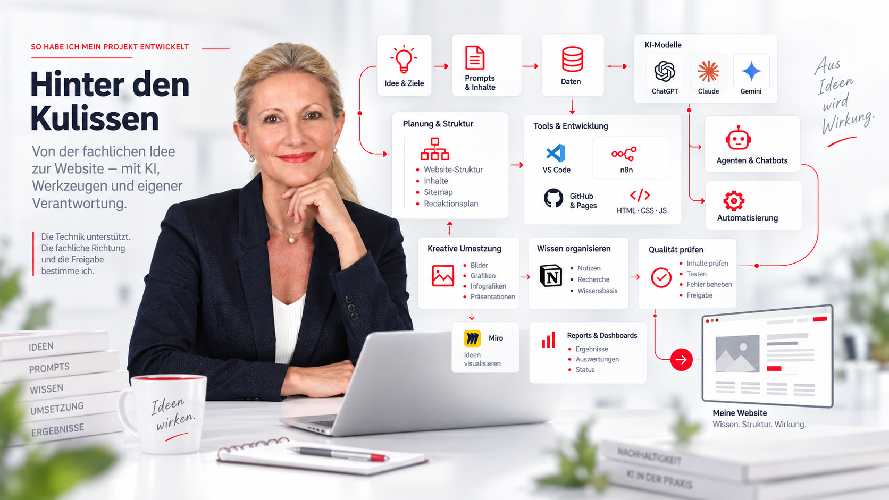
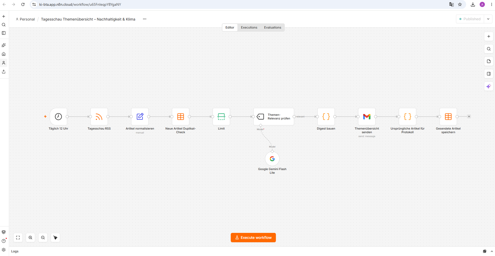
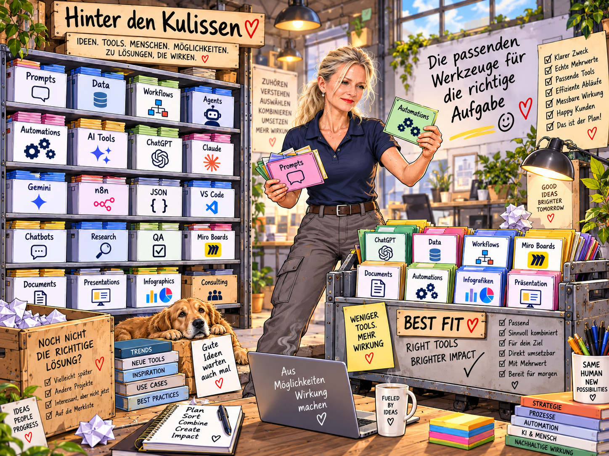
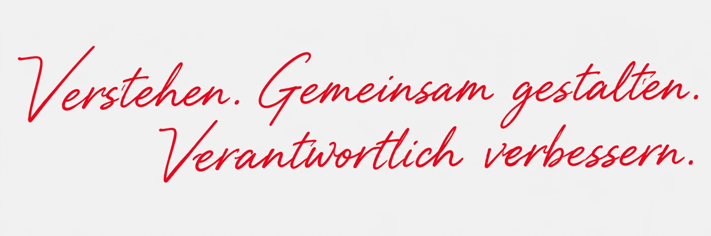

Ziel klären
Ziel, Zielgruppen, Nachhaltigkeit, KI und Anforderungen definieren.
Von der ersten Idee bis zur veröffentlichten Website – mit KI, Tools, Workflows und eigener Verantwortung.
Diese Seite zeigt transparent, wie ich dieses mehrseitige Projekt entwickelt habe, welche Werkzeuge ich tatsächlich eingesetzt habe und wie menschliche Expertise, KI-Unterstützung, Automatisierung und überprüfbare Umsetzung zusammenspielen.

Fünf Schritte von der fachlichen Idee bis zur veröffentlichten Website.
Ziel, Zielgruppen, Nachhaltigkeit, KI und Anforderungen definieren.
Themen recherchieren, Quellen prüfen, Inhalte ordnen und Seitenstruktur entwickeln.
Mit KI Ideen, Texte, Varianten, Visualisierungskonzepte und Seiteninhalte entwickeln.
HTML, CSS und JavaScript mit VS Code bearbeiten und die einzelnen Projektseiten integrieren.
Inhalte, Links, Layout, mobile Darstellung und Funktion prüfen und anschließend über GitHub Pages veröffentlichen.
Nur tatsächlich eingesetzte Werkzeuge – für jedes kurz erklärt: was und wofür.
Tagesschau Themenübersicht – Nachhaltigkeit & Klima

Täglich um 12 Uhr automatisch ausgelöst.
Neue Meldungen aus dem Tagesschau-Feed technisch aufbereiten.
Bereits verarbeitete Meldungen erkennen.
Google Gemini bewertet Nachhaltigkeit, Umweltschutz, Klimawandel und Regulatorik.
Themenübersicht zusammenführen und per Gmail senden.
Gesendete Artikel speichern, damit der Prozess beim nächsten Lauf nachvollziehbar fortgesetzt wird.
Wichtig: Nicht die gesamte Website ist autonom durch einen Agenten entstanden.
n8n automatisiert definierte Schritte zur Nachrichtenauswahl und Aufbereitung.
Gemini übernimmt einen abgegrenzten Bewertungsschritt.
KI hilft bei Auswahl, Strukturierung und Verarbeitung, arbeitet aber nicht ohne definierte Regeln und Grenzen.
Ich bestimme Ziel, Kriterien, Inhalte, Qualitätsanforderungen und Freigabe.

Nicht jedes Tool ist für jede Aufgabe geeignet. Aus der Vielzahl der Möglichkeiten wähle ich die Werkzeuge aus, die für Ziel, Aufgabe und gewünschte Wirkung sinnvoll sind. Entscheidend ist nicht die Menge der eingesetzten KI-Systeme, sondern ihr kontrolliertes Zusammenspiel.
Erstellt mit ChatGPT Bildgenerierung. Visualisiert den gesamten Projektprozess von Idee und Struktur bis zur Website.
Erstellt mit ChatGPT Bildgenerierung. Visualisiert die Auswahl und Kombination geeigneter KI-Systeme, Tools, Workflows und Methoden.
Diese Werkzeuge gehören zu meinem Lern- und Erprobungskontext. Ihre Nennung bedeutet nicht automatisch, dass sie für die Erstellung dieser Website produktiv eingesetzt wurden.
Consultant für verantwortliche KI & Nachhaltigkeit
„Ich übersetze zwischen Technologie, Menschen und Verantwortung.“
